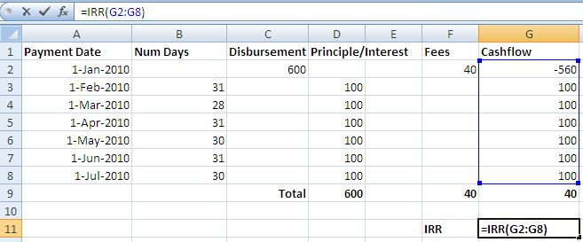
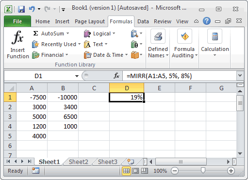
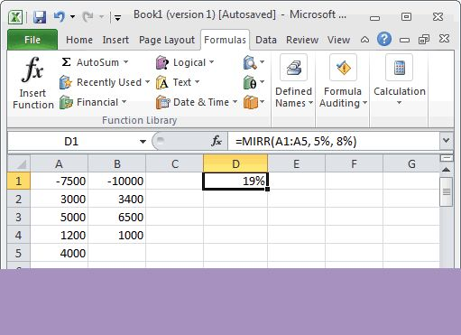
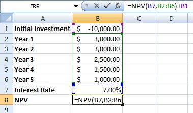
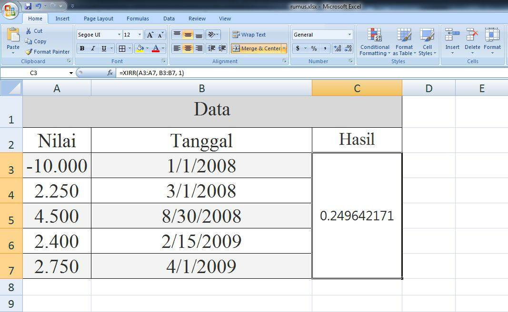
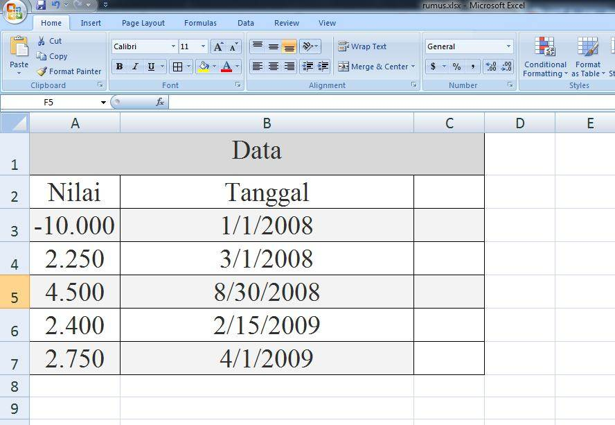

NPV, IRR, MIRR, XIRR: menilai investasi
NPV menghitung nilai sekarang dari arus kas masa depan. IRR mencari tingkat pengembalian yang membuat NPV nol.
=NPV(tingkat; arus1; arus2; ...) =IRR(arus; [tebakan])
| tingkat | Tingkat diskonto per periode |
|---|---|
| arus | Arus kas; untuk IRR minimal satu negatif dan satu positif |
Langkah praktik
- NPV hanya menghitung arus kas di akhir tiap periode. Investasi awal ditambahkan terpisah: =NPV(10%;B2:B4)+B1.
- IRR menerima deret arus kas termasuk investasi awal: =IRR(B1:B4).
- XIRR dipakai bila arus kas tidak terjadi pada selang waktu yang sama (ada kolom tanggal).
Tangkapan layar praktik





